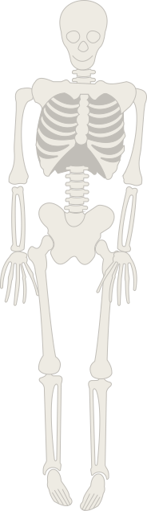

This is Skully's quest. Will you help him get to the bottom of this?
Rules:
Every wrong answer will shrink the tunnel.
Get to the bottom while keeping Skully alive.
Ready? GO!
▲
▼
As a result of the negotiations in 1974, where did the cemetery move to?
Can you name one of the families that is buried in the graveyard who was among the first European settlers in Oshawa?
Who was the first settler of European Heritage in Oshawa?
According to the grave makers, who was the first burial in that graveyard?
Who has a memorial stone placed in the Pioneer Cemetery after it was found that their original stone was missing?
What's the oldest graveyard in Oshawa?
here you've reached the bottom